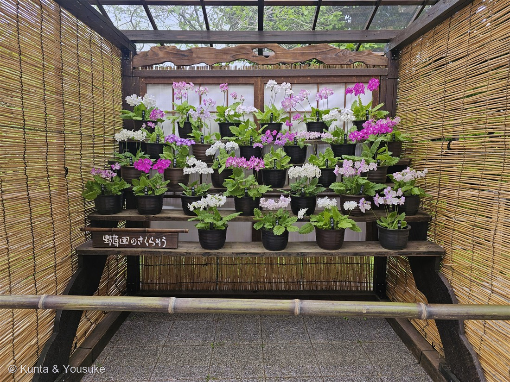
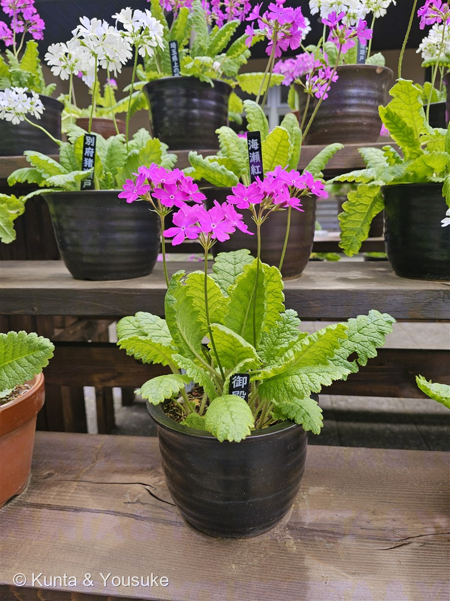
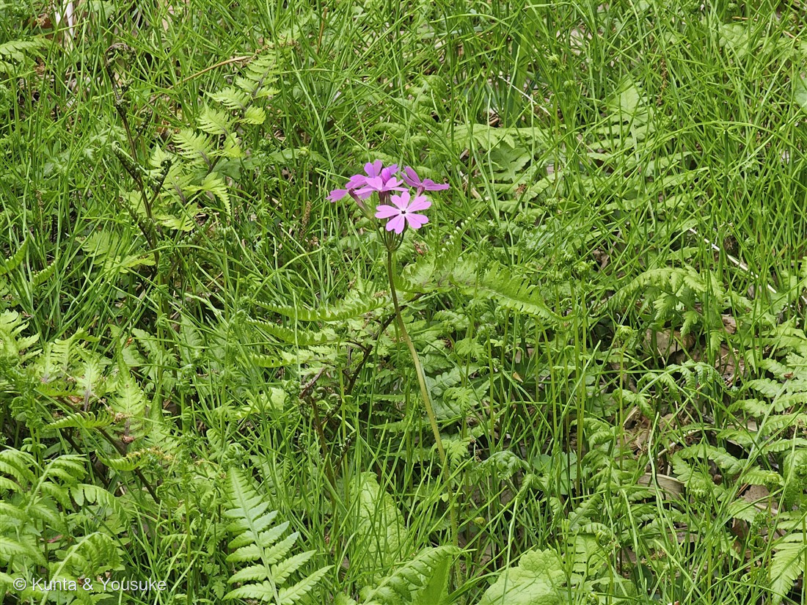

地図を読み込んでいるよ…
🔍 写真も地図も、押しているあいだ拡大して見られるよ（スマホは指を置いてすこし待ってね）。
🌍 の地図＝この子がもともと自生している場所を緑に。東アジア（日本・朝鮮半島・中国北東部）。湿った草地・河川敷・明るい落葉樹林に自生。
⭐東アジア（日本・朝鮮半島・中国北東部）に自生する在来のサクラソウだよ。湿った草地・河川敷・明るい落葉樹林が好き。⚠でも開発でその湿地が減って、いまは準絶滅危惧。⭐さいたま市の田島ヶ原の自生地は、国の特別天然記念物——野生のサクラソウの原っぱが、国の宝物なんだ。
⚠ 地図は国（日本と中国だけ県・省）までしか塗れないから、ほんとうの分布より広く見えていることがあるよ。地図はだいたいの場所。正確なところは、上の文を見てね。
サクラソウ（桜草）
Primula sieboldii E.Morren
別名 · ニホンサクラソウ／ 原産 · 東アジア（日本・朝鮮・中国北東部）／ 見どころ · ⭐江戸の古典園芸（桜草花壇・約300品種）・シーボルトの名・ダーウィンの異形花柱性
サクラソウ科 · Primulaceae（サクラソウ属 Primula）── 図鑑で初めてのサクラソウ科／⚠準絶滅危惧・埼玉/大阪の県花
名前と学名の由来 ── 桜の草と、シーボルト
- 和名サクラソウ（桜草）＝花がサクラに似ているから。⭐しかも5枚の花びらの先が、浅く2つに裂けてハート形——サクラの花びらの“割れ”にそっくりなんだ。
- 属名 Primula（プリムラ）＝ラテン語 primus（最初・いちばん）から。春に、真っ先に咲く花の意味。
- ⭐種小名 sieboldii＝ドイツの医師 フィリップ・フランツ・フォン・シーボルト（Philipp Franz von Siebold）への献名。江戸時代に長崎へ来て、日本の植物をたくさん集めて、ヨーロッパに紹介した人。110 サルスベリ・115 アルストロメリアたちと同じ、人の名前をもらった学名だよ。
この植物のこと ── 春の湿地の、サクラソウ
- サクラソウ科サクラソウ属の多年草。根茎で殖える。しわの多い卵形の葉（写真②③）。春（4〜5月）に、淡紅（まれに白）の5弁花を、茎の先に散形（さんけい）につける。花径2〜3cm。
- 野生の姿（写真③）＝湿った草地・河川敷・明るい落葉樹林に、シダや草に混じって咲く。東アジア（日本・朝鮮・中国北東部）に自生。
- ⚠でも、今は減っている。開発で湿地が失われ、準絶滅危惧。⭐埼玉県と大阪府の「県の花」。そしてさいたま市の田島ヶ原サクラソウ自生地は、国の「特別天然記念物」——野生のサクラソウの原っぱが、国の宝物になっている。
⭐ 盆栽みたいに、奥が深い ── 江戸の古典園芸「桜草花壇」
⭐燻太さんの「盆栽みたいに、奥が深い世界なのかな」＝大当たり。
- サクラソウは、菊・朝顔・万年青（おもと）と同じ「古典園芸植物」。⭐江戸時代、荒川沿いで栽培が盛んになり、園芸の一大ジャンルになった。
- 「連（れん）」という愛好会が作られ、品評会が開かれ、厳しい作法が決められた——そのルールは、今も受けつがれている。⭐江戸のころだけで約300品種、いまの「さくらそう会」は2019年で322品種を認めている。一鉢ごとの名前（写真②の「海瀬紅」など）＝その品種の名前なんだ。
- ⭐飾り方も、独特。写真①が、その名も「桜草花壇（さくらそうかだん）」——簀（すのこ）掛けの下に、黒い鉢を段々に並べる。花を上から見下ろすんじゃなくて、横から、一鉢ずつ愛でる。日本だけの、静かで、贅沢な見せ方。──盆栽と同じ、“一鉢の宇宙”を味わう文化なんだよ。
⭐ ダーウィンも夢中 ── 2種類の花（異形花柱性）
- サクラソウ属（Primula）は、異形花柱性（いけいかちゅうせい）で有名。⭐同じ品種でも、花に2つのタイプがある：長花柱花（めしべが長く、おしべが低い）と、短花柱花（めしべが短く、おしべが高い）。
- ⭐違うタイプどうしでないと、うまく種ができない（自分や同じ型の花粉を拒む）。──近い相手をさけて、遠くの相手と結ばれるための、体のしくみ。
- ⭐これは、044 ペンタスと同じ異形花柱性。そしてチャールズ・ダーウィンが、サクラソウ属で研究した古典なんだ。花の形を見くらべたら、「長い型」と「短い型」、探してみてね。
同定について
- ⭐決め手：5弁で、先が浅く2裂したハート形の花（淡紅）＋しわの多い卵形の葉＋根茎＋散形花序＝サクラソウ（Primula sieboldii）。写真②③のどちらも、この形。
- 園芸のプリムラとの区別：花屋さんで冬〜春に並ぶ「プリムラ」（Primula の西洋の園芸種＝ポリアンサ・マラコイデスなど）とは別。この子は日本の野生種＝ニホンサクラソウ。
- おまけのクリンソウ（九輪草）との区別：同じサクラソウ属だけど、クリンソウは花が茎に段々（輪状）に積み上がる（お寺の塔の「九輪」に見立てた名前）。サクラソウは一段の散形。
参考：Wikipedia「サクラソウ」（花弁が5枚で先が2裂／sieboldii＝シーボルトへの献名／江戸からの古典園芸・約300品種／田島ヶ原自生地＝特別天然記念物／埼玉・大阪の県花）、Wikipedia「Primula sieboldii」（東アジア原産・湿った草地/河川敷/明るい落葉樹林／準絶滅危惧／江戸の園芸「連」と品評会／2019年で322品種）。異形花柱性はサクラソウ属の古典的性質（ダーウィンの研究対象）。